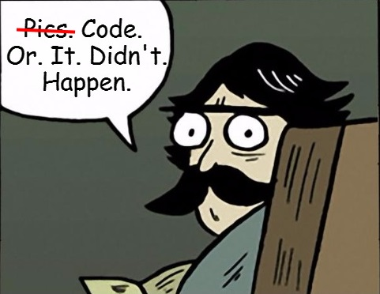
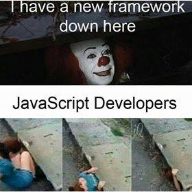
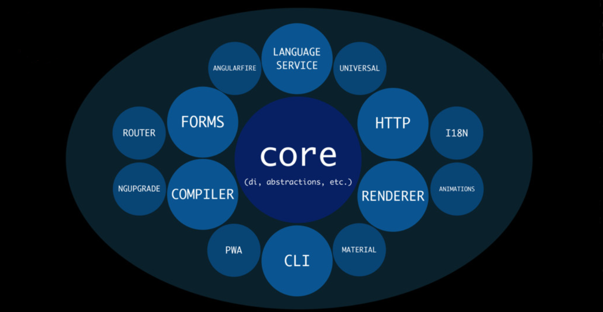
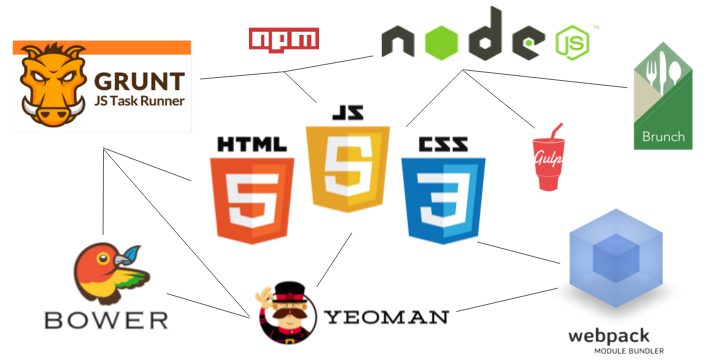
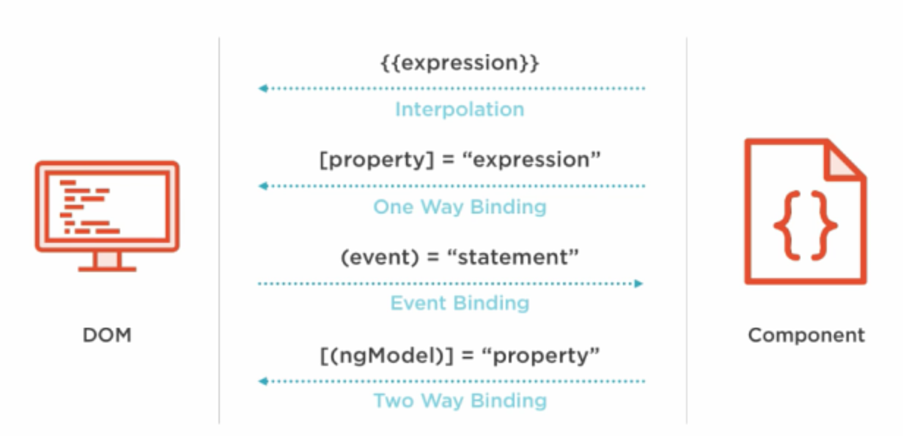
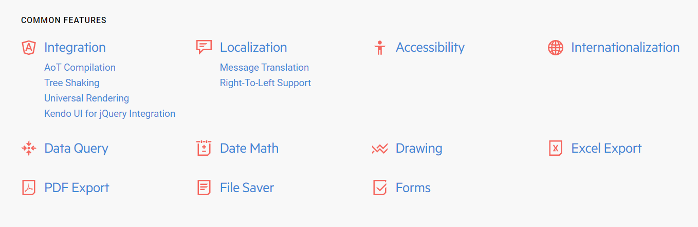

Kendo UI for Angular

Welcome
Progress Virtual Classroom

| Date | Time | Course |
| February 28, 2018 | 9am - 1pm EST | Kendo UI & Angular |
| March 7, 2018 | 9am - 1pm EST | Telerik UI for ASP.NET MVC and ASP.NET Core |
| March 8, 2018 | 9am - 1pm EST | Kendo UI & React |
| March 14, 2018 | 9am - 1pm EST | Kendo UI & jQuery |
| March 22, 2018 | 9am - 1pm EST | Kendo UI & Vue |
| March 27, 2018 | 9am - 1pm EST | Telerik UI for Xamarin |
| March 30, 2018 | 9am - 1pm EST | Telerik UI for WPF |
| April 5, 2018 | 9am - 1pm EST | Telerik Reporting & Telerik Report Server |
| April 10, 2018 | 9am - 1pm EST | Telerik UI for WinForms |
| April 12, 2018 | 9am - 1pm EST | Telerik UI for ASP.NET AJAX |
| April 13, 2018 | 9am - 1pm EST | Telerik UI for UWP |

Denis Kyashif
 |
denis@newventuresoftware.com |
 |
github.com/deniskyashif |
 |
@deniskyashif |

Agenda
- TypeScript
- Angular
- Kendo UI for Angular
- Q&A
Say NO to the slow and painful
We'll make it interactive

Tools that we need
- NodeJS:
- https://nodejs.org/en/download/current/
- IDE/Text Editor
- Visual Studio Code, WebStorm, Sublime Text etc.
- Slides & Demos
- https://github.com/newventuresoftware/kendo-ui-for-angular
* Refer to README.md for instructions on how to run the projects
What is TypeScript?
- Language created by
Microsoft. - Has optional
static typing. - Compiles to JavaScript.
- Inherits concepts from
C#. - Provides language service API.
It's always better to catch errors at compile time rather that at runtime.
Benefits of TypeScript
- Due to
static typing, it's more predictable. - Due to
modules, namespaces and stronger OOP, it scales better for larger apps. - Due to
compilation step, some errors are caught compile-time, not run-time.
Installing TypeScript
Using the Node Package Manager.
npm install --global typescriptCompiling TypeScript
TypeScript is written in .ts files, which can't be used directly in the browser.
It need to be compiled to vanilla .js first.
tsc main.tstsconfig.json
Specifies the way TS is compiled.
(autogeneratable with tsc --init)
{
"compilerOptions": {
"target": "es5", // Sets the output JS's version
"module": "commonjs", // Sets the module loader
"outDir": "dist", // Sets output JS files' location
"sourceMap": true, // Allows debugging
"noEmitOnError": true // Do not compile if errors
}
}Language Features
Static Type System
“Strongly typed languages reduce bugs by 15%.”
Basic Types
predefined in the language:
number, string, boolean, Array, enum, undefined, null, tuples, any, void, never
Live Demo

Complex Types
created by the developer
Classes
class Employee {
name: string;
constructor(name: string) {
this.name = name;
}
greet(): string {
return `Hi, my name is #{this.name}`;
}
}Live Demo
Classes in TypeScript
Interfaces
interface MyInterface {
member: number;
optionalMember?: boolean;
myMethod(param: string[]): number;
}
const instance: MyInterface = ...Live Demo
Interfaces
Generics
Class<T>
Creating a component that can work over a variety of types rather than a single one.
Live Demo
Generics
Modules
import / export
Live Demo
Modules
EcmaScript Next
CheatsheetLive Demo
More than a language
TypeScript also provides tooling and language services for autocompletion, code navigation and refactoring.
tssserver
Plugins for:
- Tide(Emacs)
- VS Code TypeScript Support
- TypeScript-Sublime-Plugin(Sublime Text)
Type Declaration Files
{lib}.d.ts
Distributed via NPM
npm install --save @types/jqueryTypeScript and Angular
Learn TypeScript
Official DocumentationEvery time a new JS Framework comes up...
...but not this time.

A developer platform for building mobile and desktop web apps using TypeScript/JavaScript and other languages.
Framework
Architecture

With all the front-end build tools, setting up a project can be tedious.
Angular CLI solves this problem!
angular-cli
- Project initializer
-
Generating:
- Components
- Services
- Directives
- Pipes
- Linting
- Building
- And many more...
Live Demo
Setting up a project with the Angular CLI

Angular CLI
- Install NodeJS
- https://nodejs.org/en/download/
- Install Angular CLI
npm install -g @angular/cli- Initialize a project
ng new my-app- Navigate to the project root.
cd my-app- Run the project
ng serve --open
Modules
@NgModule({
imports: [ BrowserModule ],
declarations: [ AppComponent ],
bootstrap: [ AppComponent ]
})
export class AppModule { }
platformBrowserDynamic().bootstrapModule(AppModule);What is @NgModule?
- A decorator function that takes a single metadata object whose properties describe the module.
- Tells Angular how to compile and run the module code.
- Consolidates components, directives and services into cohesive blocks of functionality.
- It can import other modules for reusing their Components, Directives etc.
Components
@Component()
Components in Angular
- The basic UI building block in Angular.
- Control the view.
- Represent anything visible to the end user.
- Angular creates, updates and destroys components as the user moves through the app.
- Angular provides view encapsulation by default which enables the Shadow DOM
Component Tree

Data Binding
{{}} () [] [()]
A mechanism for coordinating the view with the application data.
Data Binding Types
Live Demo
Creating Angular Components
Directives & Pipes
@Directive()
@Pipe()
What are Directives?
Directives aim to extends the static nature of HTML. They allow creating custom elements, attributes and even control flow inside the HTML.
Directives Types
- Components - directives with a template.
- Structural - change the DOM layout by adding and removing DOM elements(*ngIf, *ngFor).
- Attribute - change the appearance or behavior of an element, component, or another directive(NgStyle, NgClass).
What are Pipes?
|
Live Demo
Working with Directives and Pipes
Dependency Injection and Services
@Injectable()
What is Dependency Injection(DI)?
A design principle in which a class should receive its dependencies from external sources rather than creating them itself.
DI Example
class Car {
public engine: Engine;
constructor() {
this.engine = new Engine();
}
}What is the problem here?
- Tight coupling between Car and Engine
- If the definition of Engine changes, Car must also change.
- Engine cannot be shared among Car instances.
- Is it possible to create an Engine in a test environment?
DI Example
class Car {
public engine: Engine;
constructor(engine: Engine) {
this.engine = engine;
}
}The class now receives its dependencies in the constructor.
const engine: Engine = new HybridEngine();
const car = new Car(engine);Angular ships with its own dependency injection framework. This framework can also be used as a standalone module by other applications and frameworks.
Services
- A service is nothing more than a class in Angular. It remains nothing more than a class until registered with an Angular injector.
- You don't have to create an Angular injector. Angular creates an application-wide injector for you during the bootstrap process.
DI & Services

Providers
- A provider is something that can create or deliver a service.
- The providers are registered in the app module.
@NgModule({
imports: [BrowserModule],
providers: [UserService],
declarations: [App],
bootstrap: [App]
})
export class AppModule { }platformBrowserDynamic().bootstrapModule(AppModule);Live Demo
Services and DI
Routing in Angular
What is Routing?
- Routing the standard way to navigate in a web applications.
- Each unique route must always return the same page.
Live Demo
Angular Routing.
Angular HttpClient
- Angular's http service delegates the client/server communication tasks to a helper service called the XHRBackend
- Register for HTTP services
- Import the HttpClientModule
- Can work with both Observables and Promises.
Angular HttpClient Example
// Inject the HttpClient Service
import { HttpClient } from '@angular/common/http';
@Injectable()
export class CommentsService {
constructor(private http: HttpClient) { }
getComments() : Observable<Comment[]> {
// ...using get request
return this.http.get<Comment[]>('/api/comments');
}
}service.getComments()
.subscribe(comments => this.comments = comments);Angular Lifecycle
ngOnInit()
Angular calls lifecycle hook methods on directives and components as it creates, changes, and destroys them.
Lifecycle Sequence
| Constructor | The constructor has been invoked. |
| OnChanges | The data-bound input properties have been (re)set. |
| OnInit | The component/directive has been initialized. |
| DoCheck | Detect and act upon changes that Angular can't or won't detect on its own. |
| AfterContentInit | After Angular projects external content into the component's view. |
| AfterContentChecked | After Angular checks the content projected into the component. |
| AfterViewInit | After Angular initializes the component's views and child views. |
| AfterViewChecked | Called just before Angular destroys the directive/component. |
| OnDestroy | After Angular checks the component's views and child views. |
* TypeScript, Components & Directives, Component Only
Kendo UI for Angular


What is Kendo UI for Angular?
- Native Angular Component Suite.
- Each component group represents a separate Angular module.
- Distributed via NPM (nodejs package manager).
- Unlimited Product Support.
Installation
Kendo UI for Angular components are distributed via npm.
npm install --save [kendo-component]Every component represents a separate Angular module.
Live Demo
Components in Action
Kendo UI is much more that a component suite.
Data Query
The Data Query provides functions that help you handle the following bulk data operations:
sorting, filtering, grouping, aggragates

Kendo UI for Angular
Deployment
building for development and production
ng build [--prod]
Publish the contents of the generated dist/ folder to a web server.
Tooling
- Ahead-Of-Time Compiler
- Module Loader
-
Testing
- Unit testing
- e2e testing
- Code Coverage
- Bundler (Tree Shaking)
- Linter (TypeScript and CSS)
- Minifier
ng build --prod
| AOT Compilation | Pre-compiles Angular component templates. |
| Bundling | Concatenates modules into a single file. |
| Inlining | Pulls template html and css into the components. |
| Minification | Removes excess whitespace, comments, and optional tokens. |
| Uglification | Rewrites code to use short, cryptic variable and function names. |
| Dead Code Elimination | Removes unreferenced modules and unused code. |
| Prune Libraries | Drop unused libraries and pare others down to the features you need. |
Debugging

The TypeScript compiler generates source map files, which allow browsers to recover the original source code from the compiled javascript.
Ensuring Code Quality
>_ ng lint
Angular + NativeScript

Learning Resources
Questions?

Thank You!
|
denis@newventuresoftware.com |
|
github.com/deniskyashif |
|
@deniskyashif |